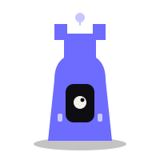

/ dark card
Python Backend + ML
FastAPI, SQLAlchemy, Docker, Scikit-learn, NLP. 720 часов, 12 месяцев.
720ч
/ quillon design system — rev.03 — 2026
Дизайн-язык Quillon v3 собран заново. Без градиентных заголовков, без glow-пятен, без типичных 2024-AI паттернов. Тёплый off-white, индиго-violet, unbounded-заголовки и bento-композиции, которые живут как редакторский разворот, а не шаблон лендинга.
Тёплый дарк (#0E0E12) отстраивает нас от холодного navy. Indigo-violet (#6E6BFF) — единственный акцент-заряд. Off-white и лавандовый тянут «бумажные» карточки в bento. Всё плоско. Градиентов на тексте и glow-пятен здесь нет.
surface — dark
surface — paper
accent — violet (flat, never gradient)
semantic — не трогают violet
Display — Unbounded (Cyrillic + Cyrillic-Ext, 300–800). Широкие пропорции, отстройка от Inter/Manrope. Body — DM Sans. Mono — JetBrains Mono. Все три поддерживают кириллицу полностью.
Смешанная 4/8-сетка вместо чистой 8-ки. Маленькие расстояния (4, 12) дают editorial-дыхание между chip-ами и аватарами; большие (64, 96) — между секциями. Контейнер 1240, gutter 16, bento-gap 12.
6 / 12 / 20 / 28 / 36 px + полный pill. Большие surfaces (hero-карточка, splash) — 36px, это «SmartClass-подпись». Чипы и бейджи — 6px или pill. Никакого neumorphism, никакой soft UI.
Dark с hairline, lavender splash, violet feature, paper, photo. Каждая живёт ради своего контента. Не смешивай glass-blur на разных — у нас его вообще нет.
/ dark card
FastAPI, SQLAlchemy, Docker, Scikit-learn, NLP. 720 часов, 12 месяцев.
/ lavender splash
Лучший проект получает 500 000 ₽ на запуск и менторскую поддержку KickStarter-кампании.
/ violet feature
С 21 недели ты берёшь реальные коммерческие заказы — и получаешь оплату.
/ paper
Читаешь документацию в оригинале, пишешь commit-messages без Google Translate.
/ stat
/ photo card (placeholder gradient)
Раньше — менеджер по продажам. Сейчас — Python-разработчик в продуктовой компании.
Короткие метки. Используй 2–4 чипа в ряду, не больше. Mono-бейдж с «/» — editorial-маркер, навеянный SmartClass.
stroke
fill
editorial / slash-badge
Маскот — абстрактный «конструкт-наставник». Flat-вектор с одним глазом-экраном, напоминает ладью. 3D-финал от иллюстратора — следующая итерация.
avatar stack — on dark
on lavender
С тобой в потоке — 12 команд по 5–6 человек. Scrum, sprints, daily stand-ups.
mascot — v0 flat placeholder

v0 — plain flat vector. В финальной итерации будет 3D-render с матовым violet-корпусом и глянцевым глазом-экраном.
Bento Quillon — 12-колоночный grid с разноразмерными карточками и смешанными характерами (dark + lavender + violet + paper). Никогда не делай 3×3 равных ячеек.
composition · 01 — «hero + side + stat row»
/ главный трек
FastAPI, SQLAlchemy, Docker, Scikit-learn, NLP. Стек, с которым на hh.ru нанимают Junior-разработчика — без «10 лет опыта в 22 года».
/ опционально
24 часа бонусом к любому треку. LLM, RAG, AI-агенты.
/ cta
Куратор ответит за 15 минут в рабочее время.
/ стат
composition · 02 — «portrait-splash + dashboard row»
/ трансформация
История Артёма, 28 лет. Нашёл работу до защиты диплома.
/ launchpad / этап 01
Подготовка резюме, линкдина, поведенческое интервью.
/ launchpad / этап 02
С действующим тимлидом в твоём стеке.
/ agency
Python-боты 5–30k, Flutter-приложения 20–80k, QA 3–15k, командные сайты 30–100k. Первый заработок — на 6-м месяце обучения.
Inline-SVG, currentColor-совместимые. Используй 1–2 формы на карточку, не больше. Формы — декор в углу, никогда не «заливка за текстом».
Bento вместо центрированного hero. Заголовок живёт в большой dark-карточке слева, справа — lavender-splash с ключевой цифрой; снизу — violet-«задай вопрос» и список треков. Это главная визитка Quillon.
/ quillon — не школа, а IT-компания
Ты учишься на реальных продуктах Quillon, собираешь кросс-функциональную команду с 21 недели и получаешь первый заработок на 6-м месяце. Дипломный проект может стать стартапом с грантом 500 000 ₽.
Dark-surface с paper-aside для ключевой цены. Статы внизу — не glow-«карточки», а простая сетка с верхней hairline.
/ track · 01
Один маршрут до Junior — от синтаксиса Python до production-ready сервиса с FastAPI, PostgreSQL и ML-моделью внутри. Заканчиваешь не портфолио из скринов, а реальным кодом, который крутится на Quillon-серверах.
Ниже — конкретные паттерны, которые мы отрицаем, и то, чем их заменяем.
gradient-text на заголовках
Синий-в-белый gradient-fill на h1 — главный AI-паттерн 2023–24. Смотрится шаблонно, «хоумпейдж любого SaaS».
монохром + один акцентный кусок
Акцент — на смысловом слове, плоским violet. Иерархия читается, личность сохраняется.
glow / blur-orbs за заголовком
Радиальные «пятна свечения» под текстом и на h1 — AI-like fingerprint. Не добавляют смысла.
organic-shape в углу
Нарисованная форма рядом — даёт характер без «свечения». Читается как иллюстрация, а не эффект.
glassmorphism на всех карточках
Тонет в фоне, не держит иерархию, повторяет 2021-2023.
решительный контраст к фону
Отделяется от фона сама, без blur. У SmartClass все карточки имеют характер, не полупрозрачность.
gradient на primary-кнопке
Blue-to-light-blue gradient — ещё один AI-шаблон. Плоский violet делает Quillon узнаваемым за 1 скролл.
flat violet + pill
Один цвет, один радиус, один shift при hover. Работает как метка бренда, а не «эффект».
emoji как основной визуальный язык
iMessage-стикеры на лендинге платной школы — несерьёзно для аудитории 22–35.
custom SVG-формы
10 форм из своей библиотеки с currentColor. Узнаваемость без детсада.
центрированный hero + 2 CTA + screenshot
Подзаголовок в одну строку
Framer-default шаблон. Выглядит как «любой стартап 2024».
bento-hero с asymmetry
Разные surfaces, asymmetric grid — хлеб редакторского дизайна.